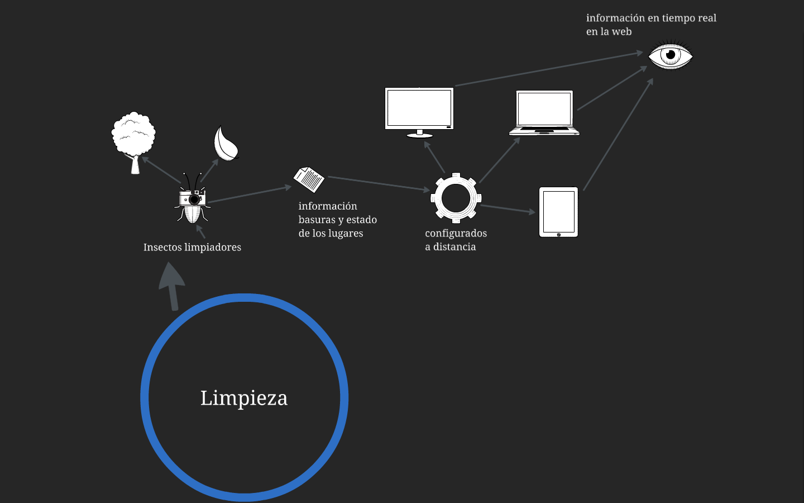

Problematica
Tristemente una gran parte de la ciudadanía no tiene la cultura de arrojar basuras en los lugares autorizados , por tanto hay empresas que se encargan de la limpieza de las calles , este sistema esta basado en gente que limpia las calles con una escoba o tambien hace mucho tiempo se implementaron los carros barredores que son un poco lentos por tanto su rendimiento es muy poco. por esto para tener una ciudad del futuro necesitamos un lugar limpio y agradable.
Por eso queremos proponer un sistema más efectivo usando la robótica y la ingeniería de sistemas.
solucion
Robots autónomos que permitan una limpieza más eficiente de las calles , y se pueden usar como método de concientización dirigida a la sociedad.
Se espera que estos robots se comuniquen con un servidor al cual le van a dar información como la cantidad de basuras,la clasificación de estas y el comportamiento de las personas con respecto a este fenómeno. la central dara informacion al robot continua al robot de cómo actuar en cada situación y además dará a los operadores una facilidad de control y una protección.
estos robots serán impulsados por energía solar o se pueden mirar otras energías alternativas.